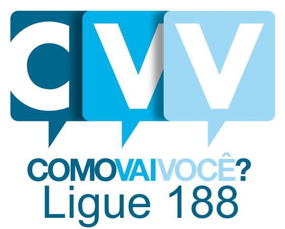
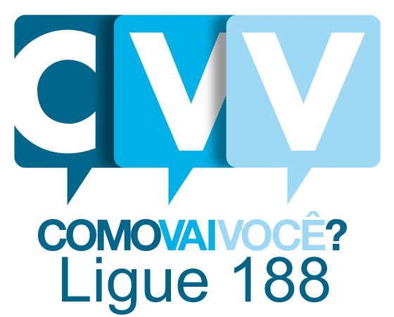

Prevenção ao suicídio: o escutar como caminho
02/09 (quarta-feira), às 17h. Duração: 50 min.
Nessa quarta, nosso convidado é José Fernando, voluntário do Centro de Valorização da Vida. O
CVV está disponível 24h por dia, todos os dias do ano, para conversar com qualquer pessoa
através do telefone 188 e também oferece cursos e outras atividades de apoio emocional para
comunidade. Com base na sua experiência como voluntário dessa organização, ele vai conversar
conosco sobre o escutar como caminho de prevenção ao suicídio.
Assista
 
